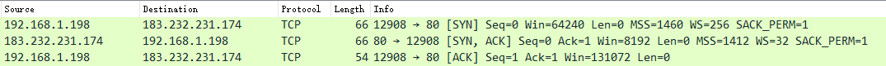

https
TCP
tcp是一种面向连接的、可靠的、基于字节流的传输层通讯协议。
tcp是用于应用程序之间通信的，在wireshark的捕获过滤器中，使用tcp协议可以指定端口，端口就对应这着应用程序，而ip协议不能指定端口，因为ip是用于计算机之间通信的。
使用tcp通信的双方必须建立连接，并且tcp是全双工通信，也就是只需要一个连接就可以让双方互相收发数据。
tcp服务端在收到数据后会发一个确认的消息给客户端，实际为了避免频繁发送确认消息，服务端会延迟确认消息的发送，在延迟的时间内收到多个数据，也只需要发送一个确认消息即可。如果客户端没有收到服务端的确认消息，则会重发数据包。
TCP报文分析（wireshark）
| 字段 | 含义 |
|---|---|
| source port | 源端口 |
| destination port | 目的端口 |
| sequence number | 本报文的第一个字节的序号。 TCP连接建立后的第一个报文序号为1，后续按规律增加 |
| next sequence number | 下一个数据包的序号 |
| acknowledgment number | 对方针对我的这次发送的数据的一个应答报文的序号 |
| Flags：SYN | 请求建立连接 |
| Flags：ACK | 收到报文后的应答报文 |
| Flags：PSH | 接受方应该将此报文传给应用层 |
| Flags：FIN | 数据都发完了（也就是说可以关闭来TCP连接了） |
| calculated window size | 告诉对端，本端数据接收的缓冲还有多大 即下次对端最多发送给本端的数据能有多少 如果数据的上传下载出现问题，可以看看该值有没有异常 |
| SEQ/ACK analysis | 该应答报文回应的是先前的哪个数据包 |
tcp报文的序号（sequence number）是根据报文的字节数量算的，发送的报文的序号可以从本端的上一个发送的报文的next sequence number，或对端最近的一次应答报文中的acknowledgment number中得知。
TCP三次握手


第一次握手：客户端向服务器发送SYN，客户端进入了 SYN-SENT状态。
第二次握手：服务器收到后，发出ACK+SYN，服务器进入了SYN-RCVD状态。
第三次握手：客户端向服务器给出确认ACK，客户端进入ESTABLISHED状态，服务器收到客户端的ACK后，进入ESTABLISHED状态，TCP连接建立。
SYN报文中不允许携带数据，故TCP的前两次握手时不允许携带数据的，但是第三次握手可以。
思考：为什么要三次握手呢，有人说两次握手就好了
举例：已失效的连接请求报文段。
client发送了第一个连接的请求报文，但是由于网络不好，这个请求没有立即到达服务端，而是在某个网络节点中滞留了，直到某个时间才到达server，本来这已经是一个失效的报文，但是server端接收到这个请求报文后，还是会向client发出确认的报文，表示同意连接。
假如不采用三次握手，那么只要server发出确认，新的建立就连接了，但其实这个请求是失效的请求，client是不会理睬server的确认信息，也不会向服务端发送确认的请求，但是server认为新的连接已经建立起来了，并一直等待client发来数据，这样，server的很多资源就没白白浪费掉了。
采用三次握手就是为了防止这种情况的发生，server会因为收不到确认的报文，就知道client并没有建立连接。这就是三次握手的作用。
其实可以简单理解为客户端和服务端必须在确认对方有收发数据的能力的情况下，才建立连接。如果对方根据我发送的数据回复了一个ACK，那就可以确认对方有收发数据的能力，故需要第三次握手，否则服务端不能确定客户端是否有接受数据的能力。
TCP四次挥手

四次挥手类似于三次握手，不同的时服务端的ACK和FIN必须分两次发送，不能像握手一样，发送一个ACK+FIN，因为服务端收到客户端的FIN，说明客户端已经没有数据需要发送给服务端了，但是服务端可能还有数据要发送给客户端，故服务端先回ACK，能服务端的数据也发送完了，再会一个FIN。
socket
socket在计算机编程中被翻译为套接字，原本意思为插座。它不是一种协议，而是一种API，Unix用它来实现进程间的通信，而通信双方的进程不一定要在同一台计算机上，现在说socket，一般是说计算机之间的网络通信。
socket是对TCP/UDP的封装，使用socket，可以完成TCP/UDP通信。Java、python等都有自己的socket相关的API。
创建服务端socket的时候需要绑定IP和端口，这样就能理解为什么把这个东西命名为socket（插座）了，因为一台计算机中有很多的端口，每个端口就像是一个插座，服务端和客户端都把线插到这个插座（端口）上，然后他们就能互相通信了。
websocket
TSL
在TCP连接建立后，通信双方使用TLS握手，然后建立TLS协议。
握手的过程简单的说就是：
- 约定通信时使用的加密算法
- 验证证书是否有效，一般是客户端验证服务器的证书
- 通过对称加密算法传输参数，约定对称加密需要的key
- TLS连接建立，使用对称加密传输数据
具体参考这篇博客 使用wireshark观察SSL/TLS握手过程--双向认证/单向认证
有几个问题解释一下
为什么对称加密只在握手阶段使用？
因为对称加密的效率远远比不上非对称加密
加密套件（Clipher Suite）的结构
Client Hello中包含客户端支持的加密套件，Server Hello中会包含服务端选取的加密套件。加密套件的形式如 TLS_RSA_WITH_AES_256_CBC_SHA256
该套件意为密钥交换算法为TLS_RSA，块加密算法AES_256_CBC，会话校验算法（也就是HMAC算法，Hash-based message authentication code）为SHA256
HMAC和Hash的主要去区别是HMAC使用了密钥，具体情况不清楚，只需要知道HMAC也是用来验证数据的完整性，但是它更安全即可。
client_key_exchange中的pre-master secret是什么？
这个是使用RSA算法交换对称加密密钥的TLS握手中会用到的，如果是DH算法，则不是传输pre-master secret。在client_key_exchange时，客户端已经拿到了服务端的公钥，所以pre-master secret时被加密过的，它是客户端产生的随机值，而Client Hello和Server Hello中也会传输随机值，但他们是明文的，故现在客户端有三个随机值，一个是加密过的，两个是明文的，客户端和服务端使用这三个随机值计算出相同的master secret，再使用master secret计算出对称加密的密钥，也就是会话密钥（session key）。
因为Client Hello和Server Hello中的随机值很容易被窃取，所以密钥的安全性很大程度上取决于第三个随机值，所以它被叫做pre-master secret。
之所以需要三个随机值是因为计算机生成的都是伪随机数，使用三个伪随机数是希望最后用到的随机数足够【随机】
Encrypted Handshake Message和Finished
Encrypted Handshake Message是握手过程中，客户端和服务端互相发送的最后一个报文，也是TLS使用对称加密的第一个报文。该报文用来让双方验证握手过程中发送的数据，以及对称加密的密钥是否正确。
该报文解密后就是Finished报文。